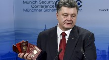
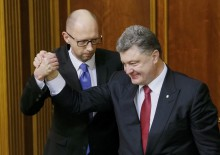

Блог. Дмитрий Раимов: Государство всегда побеждает
В географическом центре Европы, который находится в Закарпатской области, произошла перестрелка между милицией и добровольческим батальоном. Ситуация, которая сложилось вокруг
Подробнее...
О. Бондаренко: Как зажигал Порошенко
Последняя неделя мая была богата не столько на политические события, сколько на всевозможные выступления и заявления высшей верхушки украинской власти.
Подробнее...

А.Шарий: Под знаком раздраженности
Прошедшая неделя ознаменовалась сразу несколькими печальными событиями, преподнесенными, впрочем, вполне в стиле украинских СМИ едва ли не под видом достижений и побед.
Подробнее...
О. Бондаренко: Как ICTV раззомбирует украинцев ложью
Телеканал ICTV в своей программе под названием «Антизомби» не покидает попыток рассказать украинцам всю правду. В сюжете под названием «Тотальная ложь России о пожарах в Забайкалье» диктор возмущается тем, что центральные телеканалы РФ говорят не о пожарах в Забайкалье, а о ситуации в Украине.
Подробнее...

А. Шарий: Порошенко смешит, Яценюк «маргиналит», страна скользит
Прошлую неделю можно было смело назвать «Все, что вы хотели знать о развале президентской власти».
Подробнее...
А. Шарий: Татьяне Черновол осточертела политика
Бывает, что политика откровенно надоедает. Осточертела она и народному депутату от «Народного Фронта» Татьяне Черновол.
Подробнее...
А. Шарий: Почему немцы пишут правду?
Несмотря на дежурные дифирамбы от стран «новой Европы», совершеннейшим образом не влияющие ни на что, Германия, страна «решающая», своего раздражения и лидером украинской нации, и общим положением дел в нашей стране, не скрывает.
Подробнее...